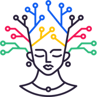

Task Command Center
The 3-Day AI RevOps Workshop · Day
1
…
Next up
—
For your review
0
Needs you
0
Done
0
◐ Theme
Hub ↗
Claude agent
Checking…
Pause
Your name
Claude is on
0
Waiting on you
0
Ready for review
0
Queue
By area
Kanban
All owners
Anyone doing
Any reviewer
Mine
Team
All areas
All statuses
Next
In progress
Review
Blocked
On hold
Queue
Done · recheck
Done
Hide done
Add a task
P0
P1
P2
Add to queue